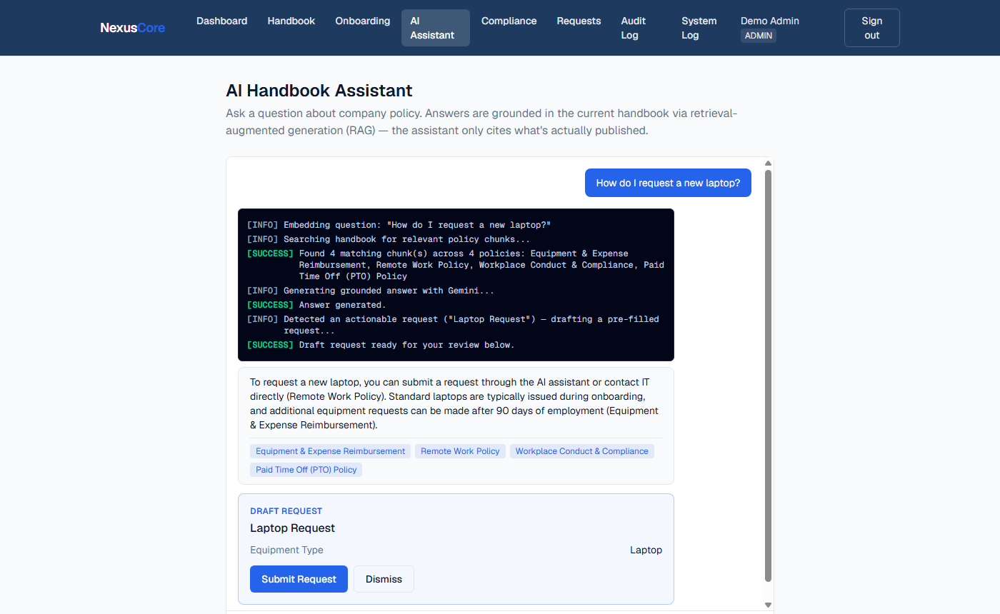

NexusCore

This one you can actually use
Click "Try the Demo" — no signup — and ask the assistant something like "How do I request a new laptop?" Watch it search the handbook, answer with citations, and draft the request itself.
The Problem
Most internal "AI ops" portfolio projects are a CRUD app with a chatbot bolted on — a nice UI wrapped around a single API call. That proves you can call an API. It doesn't prove you can build a system where retrieval-augmented generation is the foundation for actual agentic behavior: an assistant that decides what to do next, not just what to say, with every decision observable rather than hidden in a black box.
What I Built
An internal operations platform with four concrete agentic features built on the same RAG core. The Policy-to-Action agent doesn't just answer "how do I request a laptop?" — a single structured-output call to Gemini both answers the question grounded in the actual handbook (retrieved via pgvector cosine-similarity search in Postgres) and decides whether the question implies a request, drafting a pre-filled, editable card if so. The Shadow Onboarding buddy gives new hires inline "why this matters" and "help me start" actions on every pending task instead of a static checklist. The Compliance Auditor takes an uploaded photo of an ID or certification and runs it through Gemini's multimodal vision to verify document type and flag expired dates before HR looks at it. And the System Log streams a real, per-request trace of what the agent actually executed server-side — not a decorative loading animation, an honest record, durably persisted for an admin-facing audit view.
Engineering Decisions Worth Calling Out
The intent-detection for the Policy-to-Action agent is folded into the same Gemini call that generates the answer, using a JSON response schema to force structured output — instead of a naive "answer, then classify" two-call pipeline. That halves the latency and API usage per question, which matters directly on a free tier with rate limits. Every table's access rules live in Postgres row-level security policies rather than scattered across route handlers, so an admin-only mutation stays unreachable even if a server action forgets to check the role — the database enforces it either way, not the application layer alone.